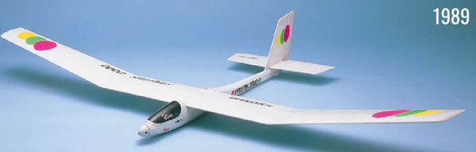

京商 ストラトス2000
ラジコングライダー

引用元画像：京商公式サイト
📋 基本情報
| メーカー | 京商（Kyosho） |
|---|---|
| 機種名 | ストラトス2000（Stratos 2000） |
| シャーシ略称 | ストラトス2000 |
| 型番 | 詳細不明 |
| 発売時期 | 1989年 |
| 価格 | 詳細不明 |
| 生産状況 | 生産終了 |
| カテゴリー | ラジコン飛行機（電動モーターグライダー） |
| サブカテゴリー | 電動グライダー（ARF / Almost Ready to Fly） |
| スケール | 詳細不明 |
📏 機体スペック
| 翼幅（Wingspan） | 76.4インチ（約1,940mm） |
|---|---|
| 翼面積（Wing Area） | 560平方インチ（約3,613平方cm） |
| 全長 | 詳細不明 |
| 全備重量 | 約1.8ポンド（約816g）※モーター・バッテリー込み |
| 主翼構造 | 3ピース式ポリヘドラル翼（発泡フォーム製、硬質グロスフィニッシュ表面） |
| 胴体 | ポリエチレン樹脂製成型胴体（軽量・高耐久性） |
| 尾翼 | 成型尾翼（軽量設計） |
⚙️ 動力系
| モーター | 550サイズブラシモーター（標準装備） |
|---|---|
| プロペラ | 折りたたみ式プロペラ（標準装備） |
| バッテリー | 7.2V Ni-MH / Ni-Cd バッテリーパック推奨 |
| 推進方式 | 電動モーターアシスト（上昇時）+ グライダー滑空（モーター停止時） |
📡 無線機・電装
| チャンネル数 | 2-3チャンネル |
|---|---|
| 必要サーボ | 2個（エルロン、エレベーター） ※3チャンネルの場合：ラダーサーボ追加可能 |
| 受信機 | FM / PPM方式推奨（当時の標準） |
| スピードコントローラー | ブラシモーター対応ESC |
💡 特徴
R/Cプレーンの世界的トレンドを作り上げた歴史的モデル
- 1989年、京商が電動モーターグライダー市場に参入した記念碑的モデル
- 余暇の充実を求める社会的背景を察知し、大人のホビーとして電動グライダーを新開発
- 電動モーターアシストにより、初心者でも手軽にグライダー飛行を楽しめる画期的な設計
- 当時の電動グライダーブームを牽引した人気機体
3ピース式ポリヘドラル翼の採用
- 発泡フォーム製の軽量な主翼に硬質グロスフィニッシュ表面加工
- 3ピース構造により、運搬・保管が容易
- ポリヘドラル翼（上反角）により、高い安定性を実現
- 初心者でも扱いやすい穏やかな飛行特性
ARF（Almost Ready to Fly）仕様の手軽さ
- 胴体、主翼、尾翼が組み立て済みのARF仕様
- モーター、折りたたみ式プロペラが標準装備
- サーボ、受信機、バッテリーを追加するだけで飛行可能
- 詳細な組み立て説明書と大型デカールシート付属
電動モーターアシストの革新性
- 550サイズブラシモーターによる十分な推力
- 折りたたみ式プロペラにより、滑空時の空気抵抗を最小化
- モーターで高度を稼ぎ、エンジン停止後はグライダーとして滑空
- エンジン機のような騒音や手間がなく、手軽に楽しめる
軽量かつ高耐久性の機体構造
- ポリエチレン樹脂製成型胴体（軽量・高耐久性）
- 発泡フォーム製主翼（軽量・修理容易）
- 全備重量約1.8ポンド（約816g）の軽量設計
- クラッシュしても修理しやすい構造
🔧 ぽすとそに工房での修理実績
修理難易度
★★★★★（非常に困難）
絶版機種のため、パーツ入手が困難です。発泡フォーム主翼やポリエチレン胴体の破損は、自作パーツや汎用パーツでの代替が必要です。
よくある故障・注意点
- 発泡フォーム主翼の破損：クラッシュ時に主翼が破損しやすい。エポキシ接着剤やガラスクロスで補修可能。
- ポリエチレン胴体のひび割れ：経年劣化により胴体がひび割れることがある。接着が難しいため、熱溶着やFRPテープで補強。
- モーターの劣化：550サイズブラシモーターは入手容易だが、当時のモーターは劣化している可能性が高い。現代のブラシレスモーターへの換装も検討可能。
- 折りたたみ式プロペラの破損：プロペラヒンジ部分が破損しやすい。汎用の折りたたみ式プロペラで代替可能。
- サーボマウントの破損：樹脂製サーボマウントが破損することがある。自作マウントやエポキシパテで補修。
修理のポイント
- 主翼の補修：発泡フォーム主翼の破損は、エポキシ接着剤＋ガラスクロス補強で対応。表面の硬質コーティングが剥がれた場合は、再塗装が必要。
- 胴体の補強：ポリエチレン胴体は接着剤が効きにくいため、熱溶着（ヒートガンやはんだごて）やFRPテープでの補強が効果的。
- モーターの換装：現代のブラシレスモーター（AXI 2808/24など）への換装により、飛行性能が大幅に向上。ただし、バッテリーやESCも現代仕様に変更が必要。
- プロペラの選定：折りたたみ式プロペラは汎用品（Graupner Cam 9x6など）で代替可能。モーター換装時はプロペラサイズも調整。
- サーボの更新：当時のサーボは劣化している可能性が高い。現代のマイクロサーボ（HiTec HS-55など）への換装推奨。
その他の特徴
- 現代技術での復活：ブラシレスモーター、LiPoバッテリー、2.4GHz送受信機への換装により、飛行性能と信頼性が大幅に向上。
- グライダーの基本を学べる機体：ポリヘドラル翼による安定性と、モーターアシストによる手軽さで、グライダー飛行の基本を学べる。
- ビンテージ電動グライダーの貴重な資料：1989年当時の電動グライダー技術を知る上で貴重な機体。
- コレクターズアイテムとしての価値：京商の電動グライダー市場参入を象徴するモデルとして、コレクター人気が高い。